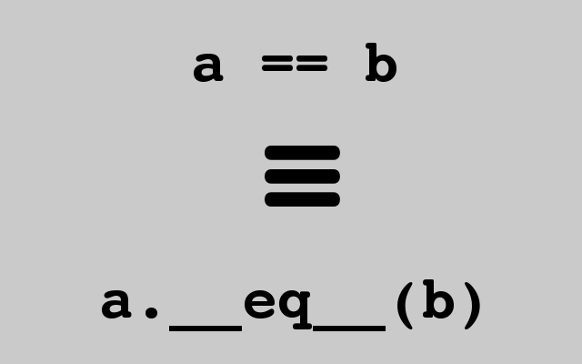

Python has modules that let you save Python objects. Saving an object actually takes two steps: serialization and persistence. Serialization (sometimes called marshaling) is the process of converting an object into a stream of bytes. The stream of bytes can be a textual or binary representation of the original object. Persistence means saving that representation to some sort of data store that lives beyond your program's execution time or interactive shell session. Keep in mind that before you persist an object, it must be serialized. In this lesson, we'll explore these object serialization and persistence modules:
Python's pickle module allows you to serialize objects and save them to a file. When using this module, pickling refers to serialization and unpickling refers to deserialization. You can pickle the following data types:
- None, True, False
- integers, floating point numbers, complex numbers
- strings, bytes, bytearrays
- tuples, lists, sets, and dictionaries containing only pickleable objects
- built-in functions
- functions defined at the top level of a module (not nested within another class or function)
- classes that are defined at the top level of a module (not nested within another class or function)
- instances of such classes whose
__dict__or__setstate__()is pickleable
Let's try using pickle. We'll use pickle's dump() function to serialize a number of objects and store them to the disk in the first session.
In an interactive Python console, type the commands below as shown:
>>> import pickle
>>> line1 = ["one", 2, 3.0]
>>> line2 = {"dict1": {"random": "stuff"}, "dict2": 2.0}
>>> f = open("pickle1.pkl", 'wb')
>>> pickle.dump(line1, f)
>>> pickle.dump(line2, f)
>>> pickle.dump(None, f)
>>> f.close()
>>>
In the session above, you created a file (written in binary mode, so that the interpreter wouldn't modify the content) and wrote three objects to it with pickle.dump(). In each dump() statement, the first argument is the object to dump, and the second argument is the file to which the serialized version should be written. Now we'll use the pickle.load() function to read the serialized object back from the file. To demonstrate that the file we just created really is permanent, close your current interactive interpreter console and open a new one for the next part of the exercise. Now, you can be sure that you're seeing exactly what another user would see.
In an interactive Python console, type the commands below as shown:
>>> import pickle
>>> f = open("pickle1.pkl", 'rb')
>>> for i in range(3):
... o = pickle.load(f)
... print(o)
...
['one', 2, 3.0]
{'dict1': {'random': 'stuff'}, 'dict2': 2.0}
None
>>> f.close()
>>>
When you open the files, the 'b' option is appended to the mode to deal with the files in binary mode. This is necessary to ensure that a pickle can be moved from one computer to another with a different architecture (say, from an Intel-based machine to a Power PC). In the fileops example from the previous lesson, you serialized data into a text format, but the pickle module in Python 3 uses a binary format by default. You can take a peek at this format by calling read() on an open pickle file.
You can also see from our example that it's possible to pickle several items, one after the other, to a file, and then read them by repeated calls of the pickle.load() function. If you try to read past the end of the file, pickle.load() raises an EOFError exception. In an interactive Python console, type the commands below as shown:
>>> import pickle
>>> open("pickle1.pkl", 'rb').read()
b'\x80\x05\x95\x16\x00\x00\x00\x00\x00\x00\x00]\x94(\x8c\x03one\x94K\x02G@\x08\x00\x00\x00\x00\x00\x00e.\x80\x05\x952\x00\x00\x00\x00\x00\x00\x00}\x94(\x8c\x05dict1\x94}\x94\x8c\x06random\x94\x8c\x05stuff\x94s\x8c\x05dict2\x94G@\x00\x00\x00\x00\x00\x00\x00u.\x80\x05N.'
>>>
| Modern Python | The byte string above reflects protocol 5, the default in Python 3.8 and later
(including Python 3.14). The original course was written for Python 3.1, which defaulted to
protocol 3. Protocol 5 produces different opcodes and byte patterns from protocol 3, which is why
the bytes shown here differ from the original lesson. You can check the defaults in your own
interpreter: pickle.DEFAULT_PROTOCOL and pickle.HIGHEST_PROTOCOL both
return 5 in current Python. |
This binary format is actually pretty compact, especially for more complex data structures. The trade-off is that it's not very human readable. We have omitted some of the text to avoid putting a single, very long line in the listing, which would have made it even more difficult to read. Unlike your fileops module data, which was easy to understand as text, editing our latest file by hand would be highly impractical. Programs in other languages probably won't be able to read this format, because it's been designed exclusively for Python use.
In fact, some older versions of Python might not be able to read this format. There are actually multiple different pickle protocols. You can, however, specify which protocol to use as a third argument to the dump() function. If you're curious about which formats your version of Python can read, or determining your current default format, that information can be found in the pickle module. More readable information about a pickle file is located in the pickletools module. In an interactive Python console, type the commands below as shown:
>>> import pickle
>>> import pickletools
>>> pickle.format_version
'5.0'
>>> pickle.compatible_formats
['1.0', '1.1', '1.2', '1.3', '2.0', '3.0', '4.0', '5.0']
>>> f = open("pickle1.pkl", 'rb')
>>> pickletools.dis(f)
0: \x80 PROTO 5
2: \x95 FRAME 22
11: ] EMPTY_LIST
12: \x94 MEMOIZE (as 0)
13: ( MARK
14: \x8c SHORT_BINUNICODE 'one'
19: \x94 MEMOIZE (as 1)
20: K BININT1 2
22: G BINFLOAT 3.0
31: e APPENDS (MARK at 13)
32: . STOP
highest protocol among opcodes = 4
>>> pickletools.dis(f)
33: \x80 PROTO 5
35: \x95 FRAME 50
44: } EMPTY_DICT
45: \x94 MEMOIZE (as 0)
46: ( MARK
47: \x8c SHORT_BINUNICODE 'dict1'
54: \x94 MEMOIZE (as 1)
55: } EMPTY_DICT
56: \x94 MEMOIZE (as 2)
57: \x8c SHORT_BINUNICODE 'random'
65: \x94 MEMOIZE (as 3)
66: \x8c SHORT_BINUNICODE 'stuff'
73: \x94 MEMOIZE (as 4)
74: s SETITEM
75: \x8c SHORT_BINUNICODE 'dict2'
82: \x94 MEMOIZE (as 5)
83: G BINFLOAT 2.0
92: u SETITEMS (MARK at 46)
93: . STOP
highest protocol among opcodes = 4
>>> pickletools.dis(f)
94: \x80 PROTO 5
96: N NONE
97: . STOP
highest protocol among opcodes = 2
>>> f.close()
In our example, pickle has no problem with native data types. The output from pickletools.dis() gives us some insight into the way the module stores the data structures, but you don't need to understand serialization format to be able to pickle things. So, what if you wanted to pickle an instance of a class that you wrote? Let's give it a try. In an interactive Python console, type the commands below as shown:
>>> import pickle
>>> class Example:
... def __init__(self):
... self.item1 = None
... def item2(self):
... return "instance variable item1 is %s" % (self.item1)
...
>>> sample1 = Example()
>>> sample1.item1 = "a string"
>>> sample1.item2()
'instance variable item1 is a string'
>>> f = open('sample1.pkl', 'wb')
>>> pickle.dump(sample1, f)
>>> f.close()
So far, your sample1.pkl file contains the serialized instance of the Example class.
Now, terminate the console session and open a new interactive one (this is important—you don't want the class definition to continue to be available from your previous session) and try unpickling the Example instance. In an interactive Python console, type the commands below as shown:
>>> import pickle
>>> f = open('sample1.pkl', 'rb')
>>> sample1 = pickle.load(f)
Traceback (most recent call last):
File "<stdin>", line 1, in <module>
AttributeError: Can't get attribute 'Example' on <module '__main__' from '...'>
>>>
What happened here? You can definitely pickle an object instantiated from your own class, but trying to load your pickled object caused an exception. So, classes that are defined at the top level of a module—that is, classes that are not defined in another class or function—can be pickled.
pickle does not include the actual code of the class used to create the instance when serializing an object, it only includes a reference to the class and the module from where it originated. The original module where the class was defined must be importable into the unpickling environment.
In the listing above, the class Example couldn't be found because it was defined in a previous interactive shell session, so sample1 was identified as an instance of class __main__.Example. The unpickling module was correctly named "__main__" (as all interactive sessions are), but there was no class Example there.
We'll fix the error by writing the class in a module that can be imported from your interactive shell sessions. To avoid having to tinker with your Python path, create your module and start your interactive shell session in the same directory. Everything should work if you create example.py in your working directory. Type the code below as shown:
class Example:
def __init__(self):
self.item1 = None
def item2(self):
return "instance variable item1 is %s" % (self.item1)
Now you have the Example class available in a module. You can use it to create a pickle file in an interactive session. After you've written the pickle file out, you can use pickletools as before to see the class encoded in the file. The module and class names appear together. In an interactive Python console, type the commands below as shown:
>>> from example import Example
>>> obj = Example()
>>> obj.item1 = "some text"
>>> obj.item2()
'instance variable item1 is some text'
>>> obj
<example.Example object at 0x108015fd0>
>>> import pickle
>>> f = open('sample1.pkl', 'wb')
>>> pickle.dump(obj, f)
>>> f.close()
>>> f = open('sample1.pkl', 'rb')
>>> import pickletools
>>> pickletools.dis(f)
0: \x80 PROTO 5
2: \x95 FRAME 50
11: \x8c SHORT_BINUNICODE 'example'
20: \x94 MEMOIZE (as 0)
21: \x8c SHORT_BINUNICODE 'Example'
30: \x94 MEMOIZE (as 1)
31: \x93 STACK_GLOBAL
32: \x94 MEMOIZE (as 2)
33: ) EMPTY_TUPLE
34: \x81 NEWOBJ
35: \x94 MEMOIZE (as 3)
36: } EMPTY_DICT
37: \x94 MEMOIZE (as 4)
38: \x8c SHORT_BINUNICODE 'item1'
45: \x94 MEMOIZE (as 5)
46: \x8c SHORT_BINUNICODE 'some text'
57: \x94 MEMOIZE (as 6)
58: s SETITEM
59: b BUILD
60: . STOP
highest protocol among opcodes = 4
>>>
Again, you'll want to terminate the interactive session and start a new one to make sure that the next session is completely isolated from earlier sessions. In an interactive Python console, type the commands below as shown:
>>> import pickle
>>> f = open('sample1.pkl', 'rb')
>>> obj = pickle.load(f)
>>> f.close()
>>> obj
<example.Example object at 0x105c8b4d0>
>>> obj.item1
'some text'
>>> obj.item2()
'instance variable item1 is some text'
>>> import sys
>>> sys.modules['example']
<module 'example' from '/path/to/your/working/directory/example.py'>
>>>
You can see from the value of sys.modules['example'] that the example module was imported when the class description was unpickled. The pickle contains the name of the module from which the class was imported, and the interpreter repeats the import to make sure that the required class is available.
Now rename the example.py file to example1.py, so it will not be importable under the same name.
If you repeat the unpickling from the previous session, you will see that it still works, despite renaming the file. Type these commands in an interactive Python console:
>>> import pickle
>>> f = open('sample1.pkl', 'rb')
>>> obj = pickle.load(f)
>>>
Why does this still succeed? When a module is imported, the interpreter creates a compiled Python file, and even though you have renamed example.py, the example.pyc file still exists (in a __pycache__ subdirectory). This is enough for the interpreter to import the example module. You have to make sure that the compiled version of the file under the original name is removed—delete the relevant __pycache__ directory.
Finally, start another new Python console and repeat the unpickling from the last session. In the new interactive Python window, type the commands below as shown:
>>> import pickle
>>> f = open('sample1.pkl', 'rb')
>>> obj = pickle.load(f)
Traceback (most recent call last):
File "<stdin>", line 1, in <module>
ModuleNotFoundError: No module named 'example'
>>>
The interpreter can no longer unpickle the object, because it cannot locate the module that defines the required class.
So far, we have used functions from the pickle module to handle the pickling and unpickling of objects. The module also defines a Pickler class, which lets us create objects. The next example session shows what happens when we try to unpickle too many objects from an Unpickler instance. In an interactive Python console, type the commands below as shown:
>>> import pickle
>>> b = ['teeter', 'totter']
>>> a = {'mytoy': b}
>>> f = open("sample1.pkl", "wb")
>>> pickler = pickle.Pickler(f)
>>> pickler.dump(a)
>>> pickler.dump(b)
>>> f.close()
>>> ff = open("sample1.pkl", "rb")
>>> unpickler = pickle.Unpickler(ff)
>>> aa = unpickler.load()
>>> bb = unpickler.load()
>>> aa
{'mytoy': ['teeter', 'totter']}
>>> bb
['teeter', 'totter']
>>> aa['mytoy'] is b
False
>>> extra = unpickler.load()
Traceback (most recent call last):
File "<stdin>", line 1, in <module>
EOFError
>>>
The Pickler and Unpickler classes are alternatives to calling the dump() and load() functions directly from the pickle module. You can instantiate a Pickler object by passing a file object into the Pickler constructor. From there, you can call the instance's own dump() method to store objects into the same file over and over. The Unpickler class has a corresponding load() method that unpickles objects from the given file sequentially. When we tried to unpickle more objects than were present in the file, the EOFError was raised.
Using Pickler and Unpickler classes allows us to store multiple objects in a single file. Although pickling individual objects with these classes is fairly straightforward, storing and retrieving multiple objects in one file is not completely documented, and the interface is limited (retrieving objects has to be done sequentially, and there's no obvious way to determine how many objects are pickled). An alternative is to use the shelve module to create a "shelf," which is a persistent dictionary of objects.
You can store objects in a shelf using a key, and then retrieve them with the same key, just like you would with a dictionary. The keys must be encodable as strings—anything else will raise an exception—but the values can be anything that can be pickled (shelve uses pickle as its underlying mechanism for serializing objects). Although it has a good interface for storing and retrieving objects, keep in mind that the shelf contents are stored on disk, not in memory, as are copies of the objects.
To create a shelf object, pass a file name to the shelve.open() function. If the file doesn't exist, it will be created for you as an empty shelf. The shelf object resulting from the call to shelve.open() can be used like a dictionary. Use keys to store and retrieve objects. Keys that don't exist will raise an exception. The example below uses the Example class from the example module that you created earlier in this lesson. Make sure you start the interactive shell in the directory where that module lives. Before you proceed, rename example1.py back to example.py. In an interactive Python console, type the commands below as shown:
>>> import shelve
>>> from example import Example
>>> a = [1, 2, 3]
>>> b = Example()
>>> b.item1 = 'some text'
>>> a
[1, 2, 3]
>>> b
<example.Example object at 0x104d90980>
>>> b.item2()
'instance variable item1 is some text'
>>> shelf = shelve.open('myshelf.shlf')
>>> shelf['a'] = a
>>> shelf['b'] = b
>>> shelf.close()
Terminate the console and start a new one. In the new interactive Python console, type the commands below as shown:
>>> import shelve
>>> shelf = shelve.open('myshelf.shlf')
>>> shelf['a']
[1, 2, 3]
>>> shelf['b']
<example.Example object at 0x109f1e490>
>>> shelf['b'].item2()
'instance variable item1 is some text'
>>> shelf['z']
Traceback (most recent call last):
File "<stdin>", line 1, in <module>
File ".../shelve.py", line 112, in __getitem__
f = BytesIO(self.dict[key.encode(self.keyencoding)])
KeyError: b'z'
>>> shelf.close()
If the filename supplied to open() does not exist, the file is created. Be careful, though—if a file does exist, you could be writing to a shelf that contains existing objects without knowing it. Also, the filename that you specify is the base filename for the actual file or files that store the shelves' data. Multiple files with various extensions (the ones you usually see are .dat, .dir and .bak) may be created when you use shelve, so don't be surprised if you find more files than you initially expected.
| Note | The exact shelve file extension(s) created depend on your platform's default dbm backend. On macOS and many Linux systems you may see a single .db file (using ndbm or gdbm) rather than the .dat, .dir, .bak triple. The interface is identical regardless of the backend. |
Shelve objects do not automatically close themselves; you must explicitly call the close() method. However, forgetting to call close() does not necessarily mean that your shelve assignments don't get written. Also, indexing into a shelve object yields a copy of the stored object, not a reference to the original object. In an interactive Python console, type the commands below as shown:
>>> import shelve
>>> a = [1, 2, 3]
>>> b = ['my', 'random', 'text']
>>> shelf = shelve.open('myshelf2.shlf')
>>> shelf['a'] = a
>>> shelf['b'] = b
>>> shelf.close()
>>> shelf = shelve.open('myshelf2.shlf')
>>> shelf['a']
[1, 2, 3]
>>> shelf['b']
['my', 'random', 'text']
>>> shelf['a'].append(4)
>>> shelf['a']
[1, 2, 3]
>>> a = shelf['a']
>>> a
[1, 2, 3]
>>> a.append(4)
>>> a
[1, 2, 3, 4]
>>> shelf['a'] = a
>>> shelf['a']
[1, 2, 3, 4]
>>> shelf.close()
>>>
One way to update values in a shelf is to take a copy of the object, change the copy, and reassign that new object to the key to persist it. That seems like a lot of code to write for an update!
You can change shelf values more easily by passing an extra keyword argument, writeback=True, to shelve's open() function. writeback=True causes shelve to cache access in memory. When the shelf's sync() or close() methods are called, the cache is synced back to the actual file. In an interactive Python console, type the commands below as shown:
>>> import shelve
>>> a = [1, 2, 3]
>>> shelf = shelve.open('myshelf3.shlf')
>>> shelf['a'] = a
>>> shelf.close()
>>> shelf = shelve.open('myshelf3.shlf', writeback=True)
>>> shelf['a']
[1, 2, 3]
>>> shelf['a'].append(4)
>>> shelf['a']
[1, 2, 3, 4]
>>> shelf.sync()
>>> shelf.close()
>>> shelf = shelve.open('myshelf3.shlf')
>>> shelf['a']
[1, 2, 3, 4]
>>>
The downside to using writeback is that memory usage is high because of the cache used. Also, because all of the writes are performed on either sync() or close(), those operations will take longer, depending on how many changes need to be written. Finally, as mentioned in the introduction to this section, shelve does not maintain references when it persists objects. In an interactive Python console, type the commands below as shown:
>>> import shelve
>>> b = ['my', 'random']
>>> a = {'myref':b}
>>> a
{'myref': ['my', 'random']}
>>> b.append('text')
>>> b
['my', 'random', 'text']
>>> shelf = shelve.open('myshelf4.shlf')
>>> shelf['a'] = a
>>> shelf['b'] = b
>>> shelf.close()
>>> shelf = shelve.open('myshelf4.shlf', writeback=True)
>>> shelf['a']
{'myref': ['my', 'random', 'text']}
>>> shelf['b']
['my', 'random', 'text']
>>> shelf['b'].append('rules')
>>> shelf['b']
['my', 'random', 'text', 'rules']
>>> shelf['a']
{'myref': ['my', 'random', 'text']}
>>>
This makes the shelf a little more like a standard dictionary. That's why many programmers prefer to use shelf in this mode. If your programs terminate in an uncontrolled way, there's a chance that your changes will be lost before they are saved on disk.
Now that you've seen some of shelve's capabilities, you can use it to store persistent data in your applications. We'll build a Library class that lets us keep track of books in a persistent data store. We'll also implement methods that let us retrieve a book from our Library class, using its ISBN, title, or author. Let's start with some tests to help us look up the books. There is one test method for each of those three ways of retrieving a book.
For the tests to have meaning, there must be a library to hold the test data. Such a library is established in the setUp() method, before each test is performed, and then deleted—perhaps a little too enthusiastically—in the tearDown() method. Eventually, the library would likely become an external store, but for our test purposes, the "fixture" that the code provides is fine. Create test_library.py below as shown:
import unittest
import library
import os
import glob
class TestLibrary(unittest.TestCase):
def setUp(self):
self.lib_fn = 'lib.shelve'
self.lib = library.Library(self.lib_fn)
self.fixture_author1 = library.Author('Octavia', 'Estelle', 'Butler')
self.fixture_book1 = library.Book('0807083100', 'Kindred',
[self.fixture_author1])
self.fixture_author2 = library.Author('Robert', 'Anson', 'Heinlein')
self.fixture_book2 = library.Book('0441790348',
'Stranger in a Strange Land', [self.fixture_author2])
self.lib.add(self.fixture_book1)
self.lib.add(self.fixture_book2)
def testGetByIsbn(self):
observed = self.lib.get_by_isbn(self.fixture_book1.isbn)
self.assertEqual(observed, self.fixture_book1)
def testGetByTitle(self):
observed = self.lib.get_by_title(self.fixture_book2.title)
self.assertEqual(observed, self.fixture_book2)
def testGetByAuthor(self):
observed = self.lib.get_by_author(self.fixture_book1.authors[0])
self.assertEqual(observed, self.fixture_book1)
def tearDown(self):
self.lib.close()
shelve_files = glob.glob(self.lib_fn + '*')
for fn in shelve_files:
os.remove(fn)
if __name__ == "__main__":
unittest.main()
In addition to the Library class, there are two other classes in the tests—Book and Author.
The Book and Author classes are already implemented. These classes contain some special methods
(methods that are surrounded by underscores) that will facilitate the development of your Library
class. Implementing the special __eq__() method allows objects to be
compared using the == operator. The __dict__ attribute
contains all of the attributes of an object. The combination of the __eq__ method and
__dict__ can be used to compare two instances of the same class. Implementing
__eq__() allows you to use the == operator to determine
whether two instances of an Author or Book object are the same. As you might have guessed, the
!= operator is handled by the __ne__() method.
a == b can be considered equivalent to a.__eq__(b):

With Book and Author already written, your job is to implement the library class. Here's a version with stubbed methods. In library.py, type the code below as shown:
import shelve
class Library:
def __init__(self, fn):
pass
def add(self, book):
pass
def get_by_isbn(self, isbn):
pass
def get_by_title(self, title):
pass
def get_by_author(self, author):
pass
def close(self):
pass
class Book:
def __init__(self, isbn, title, authors):
self.isbn, self.title, self.authors = isbn, title, authors
def __eq__(self, other):
if type(other) is type(self):
return self.__dict__ == other.__dict__
return False
def __ne__(self, other):
return not self.__eq__(other)
class Author:
def __init__(self, first_name, middle_name, last_name):
self.first_name, self.middle_name, self.last_name = first_name, middle_name, last_name
def __eq__(self, other):
if type(other) is type(self):
return self.__dict__ == other.__dict__
return False
def __ne__(self, other):
return not self.__eq__(other)
Run your tests; all three should fail:
FFF
======================================================================
FAIL: testGetByAuthor (__main__.TestLibrary)
----------------------------------------------------------------------
Traceback (most recent call last):
File "test_library.py", line 29, in testGetByAuthor
self.assertEqual(observed, self.fixture_book1)
AssertionError: None != <library.Book object at 0x...>
======================================================================
FAIL: testGetByIsbn (__main__.TestLibrary)
----------------------------------------------------------------------
Traceback (most recent call last):
File "test_library.py", line 21, in testGetByIsbn
self.assertEqual(observed, self.fixture_book1)
AssertionError: None != <library.Book object at 0x...>
======================================================================
FAIL: testGetByTitle (__main__.TestLibrary)
----------------------------------------------------------------------
Traceback (most recent call last):
File "test_library.py", line 25, in testGetByTitle
self.assertEqual(observed, self.fixture_book2)
AssertionError: None != <library.Book object at 0x...>
----------------------------------------------------------------------
Ran 3 tests in 0.031s
FAILED (failures=3)
Use the shelve module to implement the missing features. It's not as much code as you might think. Modify your Library class as shown:
class Library:
def __init__(self, fn):
pass
self.fn = fn
self.shelf = shelve.open(fn)
def add(self, book):
pass
self.shelf[book.isbn] = book
def get_by_isbn(self, isbn):
pass
return self.shelf[isbn]
def get_by_title(self, title):
pass
for book in self.shelf.values():
if book.title == title:
return book
return None
def get_by_author(self, author):
pass
for book in self.shelf.values():
for a in book.authors:
if a == author:
return book
return None
def close(self):
pass
self.shelf.close()
class Book:
def __init__(self, isbn, title, authors):
self.isbn, self.title, self.authors = isbn, title, authors
def __eq__(self, other):
if type(other) is type(self):
return self.__dict__ == other.__dict__
return False
def __ne__(self, other):
return not self.__eq__(other)
class Author:
def __init__(self, first_name, middle_name, last_name):
self.first_name, self.middle_name, self.last_name = first_name, middle_name, last_name
def __eq__(self, other):
if type(other) is type(self):
return self.__dict__ == other.__dict__
return False
def __ne__(self, other):
return not self.__eq__(other)
All your tests pass. Those passing tests indicate that the Book implementation is working. Check it out:
... ---------------------------------------------------------------------- Ran 3 tests in 0.046s OK
The tests take a significant amount of time to run, whereas before, when all our tests failed, it took almost no time at all. Taking notice of these things during early testing can help you avoid an unpromising line of development (though sometimes you want to proceed anyway, to prove a line of reasoning correct).
pickle and shelve are great for saving objects into persistent storage for other Python programs (that can read and write the same pickle protocol), but there are times when we need to save or transmit objects to programs written in a different language. If we want a human readable, cross-platform and cross-language serialization format, we can use JSON. JSON is actually a subset of JavaScript's object literal syntax. Although it was derived from JavaScript, JSON parsers exist for many languages. In fact, Python 3 comes with a built-in JSON parser.
The full details of the JSON syntax are beyond the scope of this course, but if you take a look at an example, you'll see that it is similar to nested Python lists and dicts. If you want to know more about JSON, visit the JSON website.
{
"foo":"bar",
"baz":[
1,
2,
]
}
If you wanted to serialize a file object or an instance of your custom class, you would have to define a serialization method or function of your own. Even so, JSON is incredibly useful for exchanging data between programs. You can play around with JSON using Python's json module. In an interactive Python console, type the commands below as shown:
>>> import json
>>> a = [1, 2, 3]
>>> b = ['my', 'text']
>>> c = {'a':a, 'b':b, 'none':None, 'true':True}
>>> json.dumps(c)
'{"a": [1, 2, 3], "b": ["my", "text"], "none": null, "true": true}'
>>> d = json.loads(json.dumps(c))
>>> d['a']
[1, 2, 3]
>>> d['b']
['my', 'text']
>>> d['none']
>>> d['true']
True
>>>
| Modern Python | The original lesson's json.dumps(c) output showed dict keys in a
different order ("none" before "b"). Since Python 3.7, dicts preserve
insertion order, so the serialized key order now matches the order in which the keys were
inserted into c. |
Just like pickle, the json module has dump() and load() functions. But you'll notice that in the example, you used dumps() and loads()—both with an "s" at the end. These methods serialize and unserialize an object to and from the JSON text format, but rather than persisting an object by writing to a file, or reading from persistent object stores (files), these functions produce and consume strings. Typically, JSON is used when transmitting or exchanging data over the web. The producers and consumers do not share the same file store; instead they send messages over the network. Consequently, it's more common to serialize objects for transmission, rather than persist them in a file when using the json module.
| Note | Both dumps() and loads() functions can be found in the pickle module. They can be used for serialization there, without persistence for content. (The pickle format is usually a convenient choice when two Python programs communicate). |
JSON defines a few primitive data types—strings, numbers, and booleans, as well as objects and arrays. Curly brackets signify an object. Like Python dicts, JSON objects contain a comma-separated list of colon-separated key/value pairs. The values of objects can be any of the types supported by JSON. Arrays, like Python lists, are delimited by square brackets and elements are comma-separated. Like objects, the elements can be of any type supported by JSON. Well-formatted JSON is not difficult to read. But you may already notice a major drawback with this format—it cannot map every Python type. The supported Python-to-JSON data type mappings are:
| Python | JSON |
|---|---|
| dict | object |
| list, tuple | array |
| str | string |
| int, float | number |
| True | true |
| False | false |
| None | null |
| Modern Python | For many use cases involving persistent storage of structured data that needs to be human-readable, portable, or shared with non-Python code, json is the better choice over pickle. The lesson already covers both; the key contrast is: pickle handles arbitrary Python objects (including class instances) but is Python-only and carries security risks if you load pickles from untrusted sources; json handles only the types in the table above but is universal and safe to read from any source. |
Serialization means taking a Python object and turning it into a string of bits—either a text or binary format. Deserialization is recreating an object from a text or binary representation of an object. Serialization and deserialization are necessary steps for persistent storage and retrieval of Python objects. Python has a few built-in modules that help deal with serialization and persistence. The pickle module lets you serialize, deserialize, and persist Python objects in a binary format that—for the most part—only Python programs can understand. The shelve module uses the pickle format to store several Python objects using a dictionary-like interface. The json module lets you serialize many of Python's native data types into JSON—a text format that's a subset of JavaScript's object literal syntax. Each serialization and persistence module has its own place. If you're writing a Python application that needs to save a complex data structure's state efficiently (like a game or a text editor), pickle or shelve may be your solution. If you're looking to offer a feed of data to the web, where your clients can be written in any number of various languages, you would use the json module.
Nice job on this lesson! Keep it up. (And you can thank me later for avoiding any of a number of bad pickle joke opportunities.) See you in the next lesson...